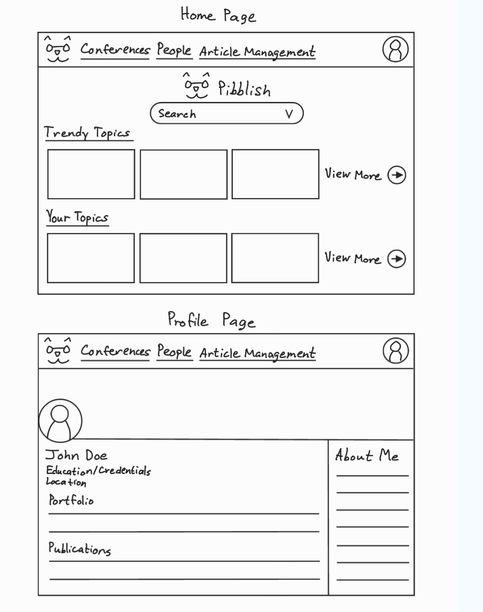
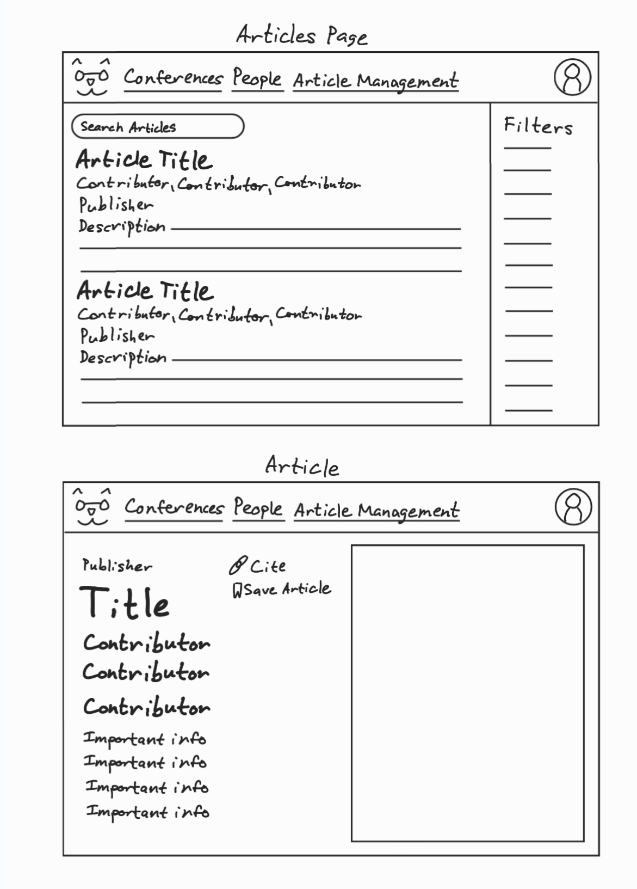
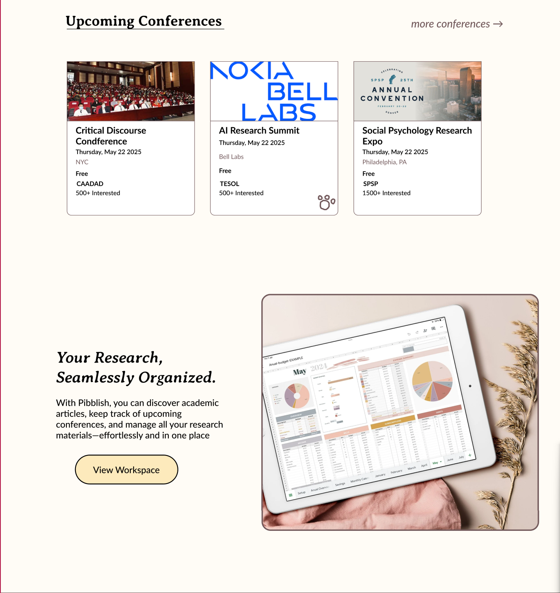
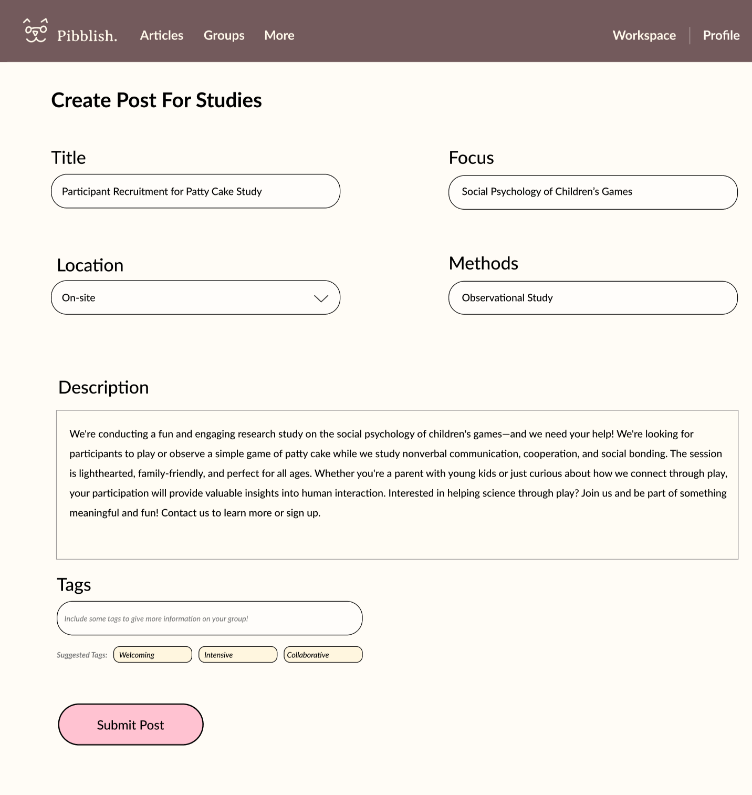
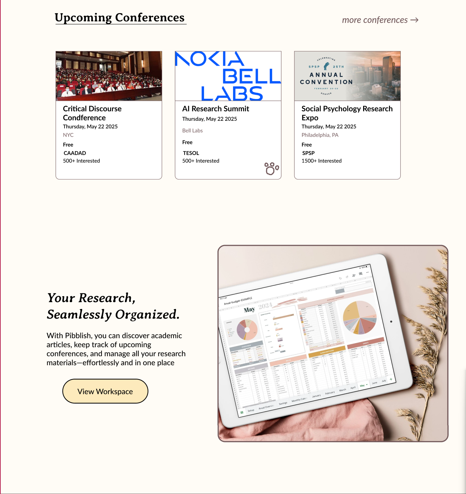
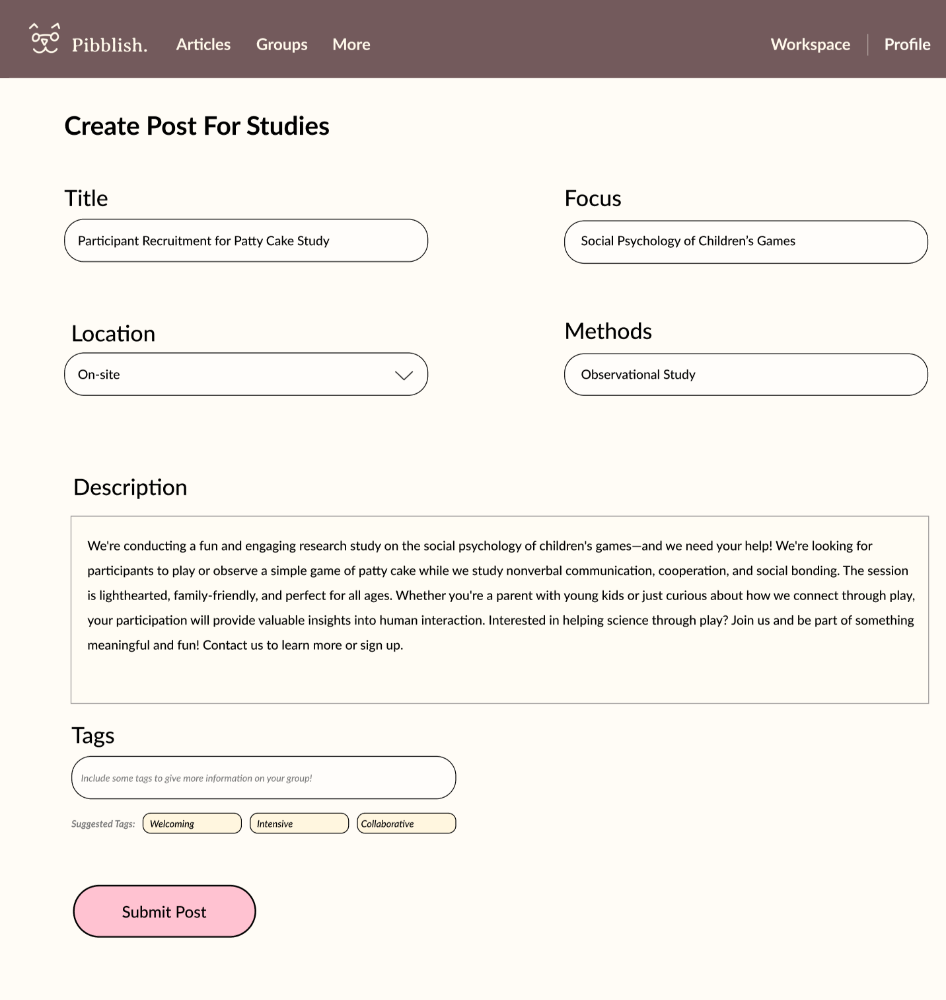

Giving Researchers the Community They Deserve With Pibblish
The Problem
Researchers consistently struggle with:
- Figuring out which research topics are active or emerging
- Finding enough qualified participants
- Understanding where and how to publish their work
Our Objectives
We set out to understand what researchers actually need and design a product that addressed:
- Topic discovery
- Participant recruitment
- Publishing guidance
- Academic community building


My Role & Contributions
I interviewed both student and senior researchers about how they choose topics, find participants, and approach publishing. From these conversations, a few consistent patterns emerged:
- It’s difficult to know which topics are “popular” or emerging
- Recruiting participants can delay entire timelines
- Publishing is confusing, especially for newer researchers
- There’s no dedicated, reliable academic community space
I also conducted a competitive analysis of Reddit, LinkedIn, Notion, Scopus, and Eventbrite. From each platform, we pulled inspiration:
- Reddit → community interaction
- LinkedIn → professional presence
- Notion → structured, modern UI
- Scopus → high-quality research access
- Eventbrite → event discovery
What We Built
- A centralized space for topic discovery
- Tools for participant recruitment
- Clear guidance for publishing and academic events
- A modern, structured academic community
Researchers validated the concept and told us this solved a real gap — especially for beginners navigating academia.
 



What I Learned
- Start earlier. More time means fewer bottlenecks.
- Divide and delegate. Trusting teammates helped us move quickly.
- Simplicity wins. Focus prevented unnecessary complexity.